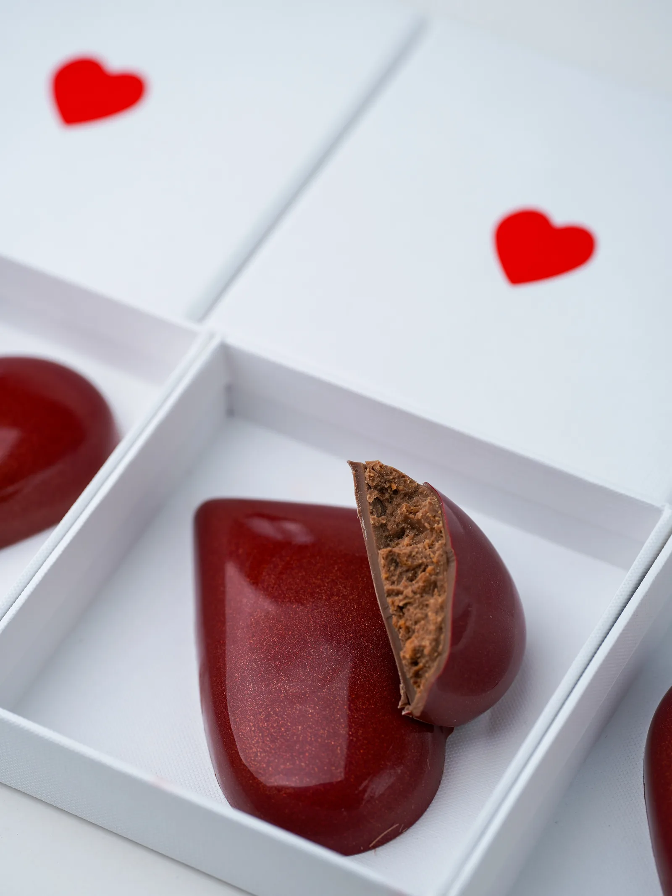
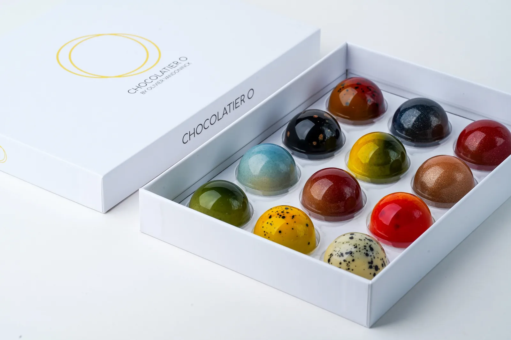
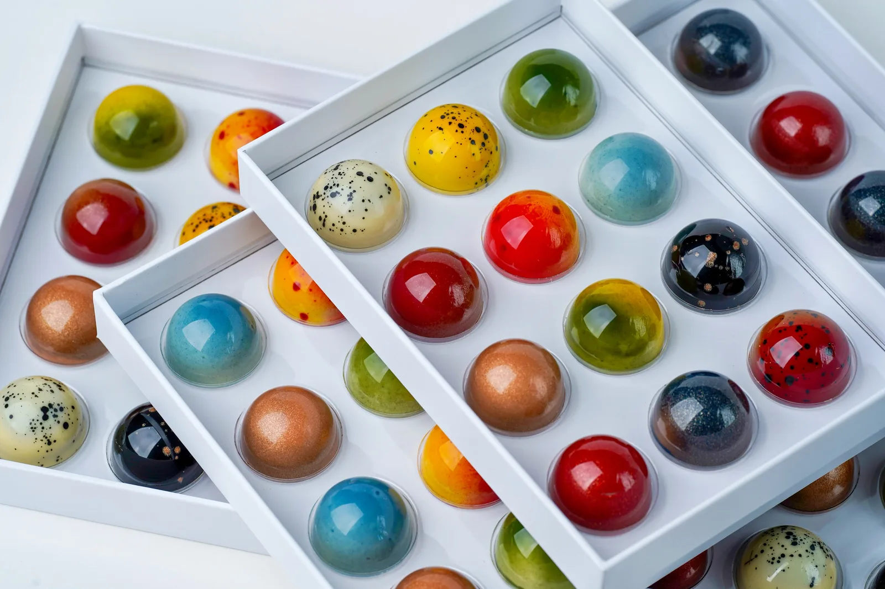
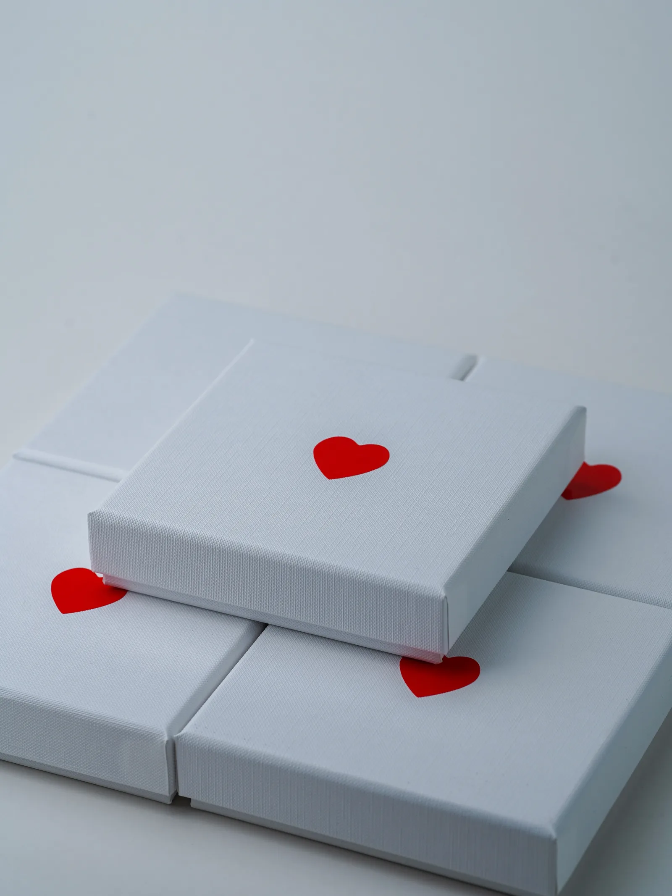
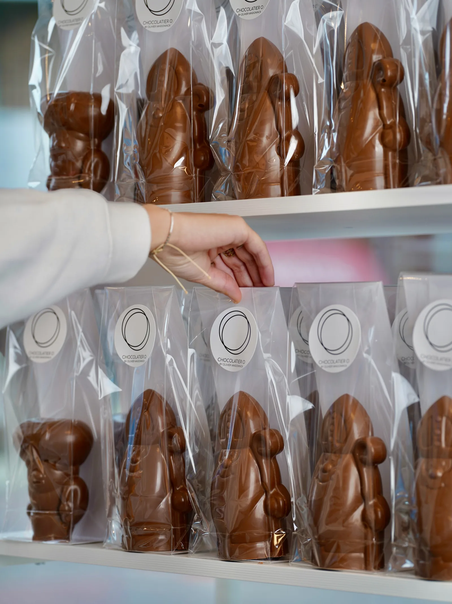

SignatureHet chocoladehart
Glanzend rood vanbuiten, praliné vanbinnen.
Een hart in rode chocolade, gevuld met hazelnootpraliné. Je breekt het open en deelt het.
Elke praline een andere kleur, allemaal gemaakt door Olivier zelf. Kom kiezen in de winkel in de Nieuwstraat, of laat je doos klaarzetten.


Olivier giet zijn pralines in alle kleuren. Gespikkeld, effen of met een gouden glans: je ziet het verschil al voor je proeft. In de winkel kies je ze zelf uit, praline per praline.

Twee dozen. Eén om te geven, één voor thuis.
Chocolatier O · Geel
De winkel was nog maar een paar maanden open toen Gault&Millau in september belde. Olivier kreeg de titel Discovery of the Year 2027. Een mooie bevestiging, en voor wie ons nog niet kent misschien een reden om eens binnen te springen.
"Wat begon als een droom, heel veel passie en vooral héél veel chocolade, krijgt vandaag letterlijk een gouden randje."
Olivier, op InstagramEen hart om samen te breken, een doos die al zegt wat je wil zeggen, of gewoon het witte doosje. Wij pakken het mooi voor je in.

Een hart in rode chocolade, gevuld met hazelnootpraliné. Je breekt het open en deelt het.

Pralines in een doos vol roze hartjes. De boodschap staat er al op, jij hoeft hem enkel af te geven.

Sober en wit, met een rood hartje. Voor een verjaardag, een bedankje of zomaar.
Geen zin om te wachten aan de toonbank? Laat ons gerust weten wat je zoekt, dan staat je doos klaar.

In melkchocolade, in verschillende formaten en smaken, mooi verpakt voor in de schoen.
Horeca of bedrijf? Ook dan kan je bij ons terecht. Stuur een berichtje en we bekijken samen wat kan.
"Chocolaterie in een stijlvol design, evenals de pralines en de doosjes waarin ze verpakt worden. Maar bovenal, wat een smaaksensatie die pralines."
HG
"Ik kreeg gisteren een doosje pralines cadeau van deze chocolatier. Dit zijn uiterst verfijnde en smaakvolle pralines."
Jolien van H
"Supermooie winkel, ik werd vriendelijk geholpen en de chocolade is zeker 1 van de lekkerste die ik ooit geproefd heb."
Nina vd Werf

Een witte winkel met lichte rekken, vol doosjes en figuren. Op dinsdag blijft de deur dicht: dan staat Olivier in het atelier en maakt hij nieuwe pralines.
Ik maakte deze demo voor jullie om te tonen wat er kan. Na een kort gesprek maak ik er iets veel persoonlijkers van, helemaal naar jullie wens.
Vrijblijvend. Ik kom langs of we bellen.
Op maat, op jullie eigen domein.
Geen voorschot. Jullie betalen pas als alles klaar is.
Hosting, domeinnaam en kleine wijzigingen, zoals nieuwe openingsuren.
Omdat een voorbeeld meer zegt dan een mail. Zo zien jullie meteen wat er kan, en het kost jullie niets.
Nee. Het gesprek is vrijblijvend. Vinden jullie het niks, dan is het daarmee gedaan.
Na ons gesprek staat jullie site binnen 10 tot 14 dagen online.
Zeker. Jullie domeinnaam kan gewoon blijven, de nieuwe site komt in de plaats van de oude.
Nee, dat doe ik op basis van ons gesprek. Eigen foto's zijn mooi meegenomen, maar niet nodig om te starten.